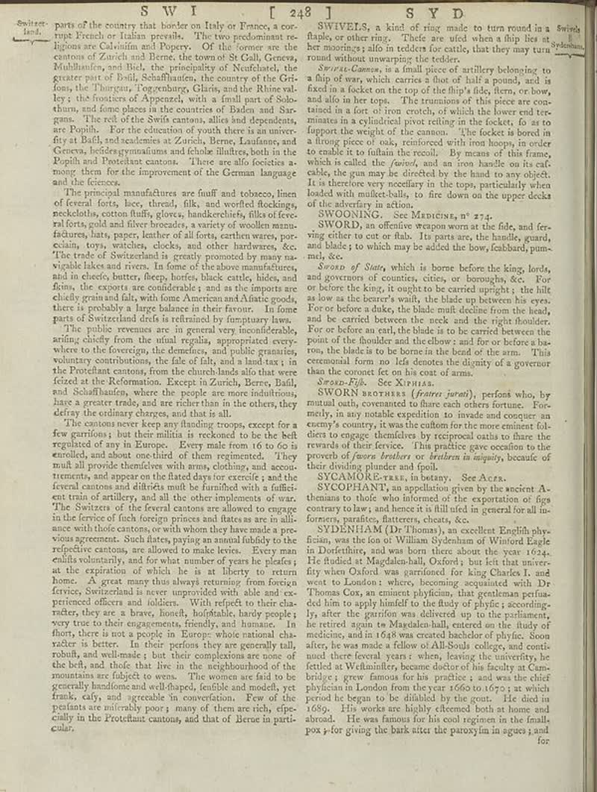

page-0251-69952e7c4a0f.jpg

Page ID: britannica:309f765b1ecc83e0a7f7762e44b4a927a7555443:train:251
Running head: SWI [ 248] SYD
Image SHA-256: 69952e7c4a0f40267d357d04308f674155b3ab206ce8f2f4887124ce481f8c1d

(untitled) [?]
parts of the country that border on Italy or France, a cor- tune French in Italian prevails. The two predominant se regions are Calvinia and Sprayer. Of the former we are the centons of Zurich and Berne, the town of St Galli, Geneva, Malhland’s and Mali, the principality of Nuofstadt, the gener part of Buli, Schaffaudins, the country of the Gris foas, the Thurgun, Toggenburg, Glaris, and the Rhine valley. I the Services of Appeares with a small part of Sabo shum, and lines places at the countries of Canada and Dur- gans. The refl of the Swifs cantons, allies and dependents are People for the dejection of words there is an univer- fly at Bali, and scadoniais e zurücke, Beren, Lauderians and Geneva, heldes gymnaliums and échelle illulites, both in the Ripih and Decerbat cantons. There are also focéeste a- mong them for the improvement of the German language and the fiecences. The principal manufactures are fluff and toboyen, lines of several forks, here, threads, folk, and worried fleidings, neckoloths cotton fluffy, gloves, handkerchiefs, flisks of fever- alters, cold and five brecords, a variety of woollen manu- factures, lats, paper, leather of alflor, earthous wers, por- edain, toys, watches, clocks, and other hardwares, &c. The trade of Switzerland is greatly promoted by many na- vigable lakes and rivers. In form of the above manufacture, and in dieels, butter, fleep, horfes, black cattle, hides, and flans, the experts are considerable and as the imports of the chiely granulated fish, with some Americans at Arielie goods, there is probably a large balance in their favour. In fome parts of Switzerland dests is obtained by fampiary law. The public revenues are in general very incredible, arising chiefly from the usual regular, appropriated every where to the foreignee, the domestic, and they gradually, voluntary contributions, the fate of falls, and a land tax; in the Protected cantons, from the church lands alto that were fored at the Reforation. Except in Zuricha, Bern, Bull, and Schaffaudines, where the people are more industrations, have a greater trade and are richer than in the others, shall use it was. The cantons never keep any binding croops, except for a few garrimsy but their militits is reckoned to be the belt regulations of any in Europe. Every male from 16 to 05 i enrolled, and about one third of them regimented. They mult all provide therefore with arms, clothing, and word traumatic, and appear on the dateted day for exercise, and the feronal cantons and dirithate mult he furished with a futitic ent train of artilities, and all its other implementos of war. The Switect of the fereral cantons are allowed to engage in the ferice of fuch foreign princes and flatters are in ali- ance with their eastern or with whom they have made a pre- vous agreement. Such latter, paying an annual fidelity to the reflective cantons, are allowed to make lexies. Every man enulis voluntarily, and for what number of years he pleties' as the expiration of which he is at liberty to return home. A great may thus always returning from foreign ferivs. Switzerland is never unproceeded with, able and see preferred effect and address. With and see reproduced effect and utilities in their character, they are a brave, loose, hoofst, hoofntable, hardy people; very true to their engagements, friendly and humane. In fany, there is not a people in Europe who want much che valdier is better. In their periods they are generally tall, roahik, and wellness is, but their complications are now of the belt, and clubs that live in the neighborhood of the mountains are fidjekt to wens. The women are fail to be generally headline and well-disped, reliable and modelly transk, city, and vascade the conversation. Few of the peelants are miribably poor; many of them are rich, efpec- ically in the Protifiant cantons, and that of Berne in partic- ular. SWIVELS, a kind of ring made to turn round in a fluids, or other ring. Theirs are ufed when a ship lies st he monitoring sals in teleckes for adults, that they may turn round without overwarping the tedder. _Switet-Canonas_, is a fault piece of artillery belonging to a filing of way which carries a flux of half a pound, and is fixed in a locked on the top of the ship's ride, then, or how, and also in her tops. The renumion of this piece are con- tained in a fara of iron roots, of which the lowest tre- minutes in a cylindrical pivot rolling in the locket, fo as to fupport the weight of the canon." the footer is born in the living place of sky, resulting with from hoops in order to cable it to fulltain the recoil. By means of this frame, which called the _hybrid_, and as iron heads on its caf- sible, the game be directed by the head to any object. It is therefore very necellary in the tops, particularly when loaded with multiclusls, to fire down on the upper decks of the shelter in an area.
SWOONING [Text]
SWOONING. See Manchiss, n° 273. SWORD), an effective weapon won at the file, and fer- ating either to eat or fish. Is parts are: the handle, geard, and blade; to which may be added the bow, feabbard pum- mal, _Sraod of State,_ which is borne before the king, lords, and governors of counties, cities or boroughs, &c. For be before the King, if weights to be carried upright; the bill as so we as the batter's wait, the blade up between the you. For or before a dake, the blade muit decline from the head, and be carried between the neck and the right shoulder. For or before an sail, the blade is to the carrier between the pouts of the shoulder and the elbow, and for or before a ba- ros, the blade is to be borne in the head of the arm. This determined, from no Heil denotes the digerity of a governor than the consent let on his cost of arms. _Source: Filk._ Sec XAnsis SWORN BORSHAS ((after juradi), perfonió, by manual oath, overward to flare each others fortune. For- metly, in any notable question in invade and concuer en summits country, it was the culton for the more eminent ful diers to engage themselves by reciprocal oaths to fame the revards of their device. This practice gave cocotion to the growth of _Jones brothers to freedom in majority,_ because of their dividing plunder and fpalt. SYCOMORFrans, has发言. See Acces. SYCOPHANT, an appellation given by the ancient A- theman to thole who informed the exporation of figs contary to bay, and hence it is full field in general for all inforners, parafities, flattreets, chests, &c. SYDINHAM (Dr.) Thomas), an excellent English phys- fusion, was the fan of William Sychham of Wanilor Eagle in Dorforth, and was born there about the year 1934. He funded at Magdalach-ball, Oxford, but left the univi- rly when Oxford was performed for King Charles J. and went to London; where, becoming acquainted with Dr Thomas Cox, an entirely physician, and perhaps perfua- eded him to apply himself for the duty of physics, according- ly, after the garrifon was delivered up to the parliament, he rented again in Magdalan ball, entered on the body of medicine, and in 16% was created backache of his faculty at home. When you made a fellow of All-Souls college, and corti- nued direct burial years where, leaving the maturity, he farled to Wedthming become delicer of his faculty atce- bridge; grew famous for his practice; and was the chief physician and London they ran 1660 to 16/20, as which was done he began to be disliked by the good. He died in 1695. His works are highly effecemed both at home and abroad. He was famous for his cool regimen in the final- px y-for giving the bark after the paroxym in agues 1 and for
Matched article: Swoon (Wikipedia, revision 1271992402, re-rank score -5.015625) · comparison
OCR issues
No OCR issues recorded for this page.